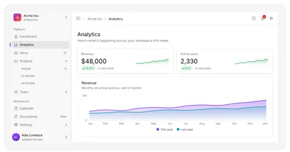
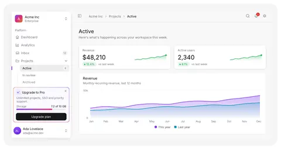
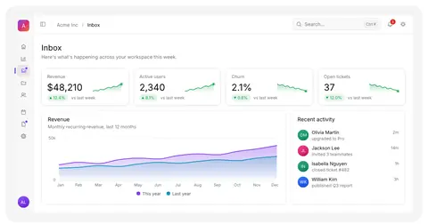
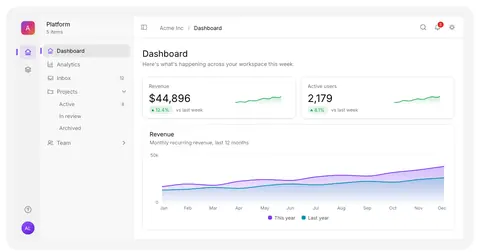
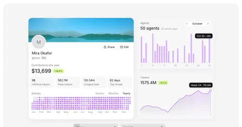

Dashboard layouts and app shells for egui
App shells to build dashboards and tools on: sidebar, inset, floating, rail, dual-pane, top-nav, inspector and bottom-nav layouts that collapse and animate.
All Dashboards & Shells components

App Shell: Sidebar
Dashboards & ShellsCollapsible sidebar (Ctrl+B springs it to an icon rail) with workspace switcher, nested groups, badges, upgrade and user cards; topbar with breadcrumb, Ctrl+K search, notifications and theme toggle.

App Shell: Inset
Dashboards & ShellsThe content floats as a rounded card inset from a sidebar-tinted frame, like a native desktop app.

App Shell: Floating Sidebar
Dashboards & ShellsThe sidebar is a floating rounded card with a soft shadow; content sits beside it.

App Shell: Icon Rail
Dashboards & ShellsThe same sidebar starting collapsed: icons with tooltips, badge dots, and a spring back to full width on Ctrl+B.

App Shell: Dual Sidebar
Dashboards & ShellsAn icon rail of sections plus a secondary panel listing the active section's pages; Ctrl+B hides the panel.

App Shell: Top Navigation
Dashboards & ShellsNo sidebar: brand, top-level tabs with a sliding underline (parents open a dropdown), search, bell, theme and avatar in one bar.

App Shell: Inspector Panel
Dashboards & ShellsSidebar + content + a right inspector panel that springs open and closed (Ctrl+I or the layers button).

App Shell: Mobile Bottom Nav
Dashboards & ShellsPhone layout: app bar with avatar, title, bell and theme toggle; a bottom tab bar with icons, badges and a springy active pill.

AI Profile
Dashboards & ShellsA contributions profile for AI work: cover and identity card, headline and stat tiles, an activity heat map, a 30-day agents bar chart and a tokens trend line.